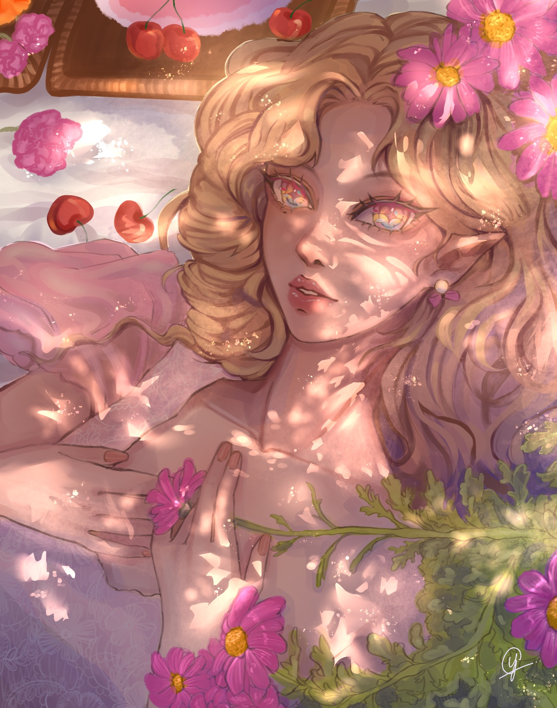
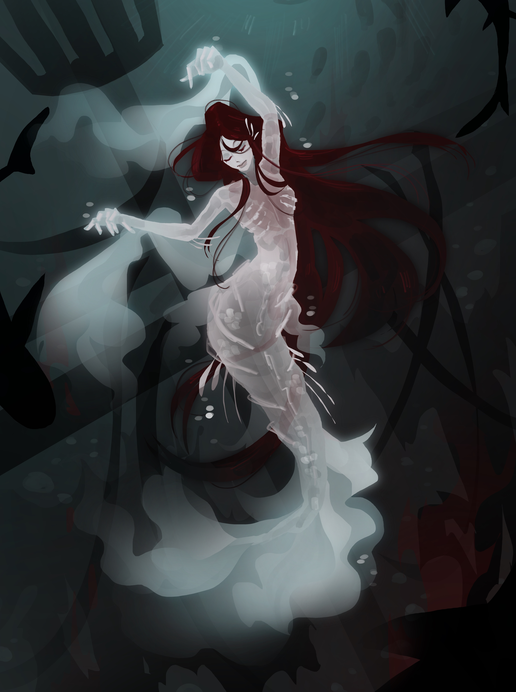
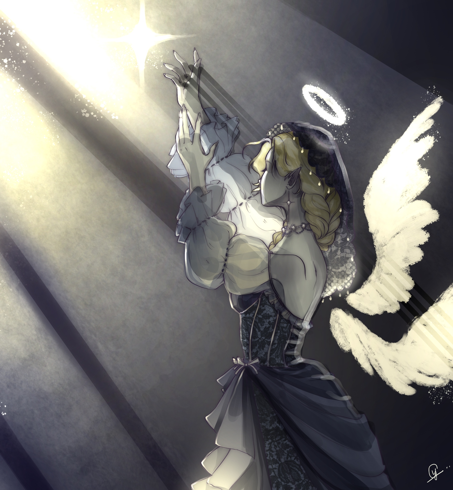
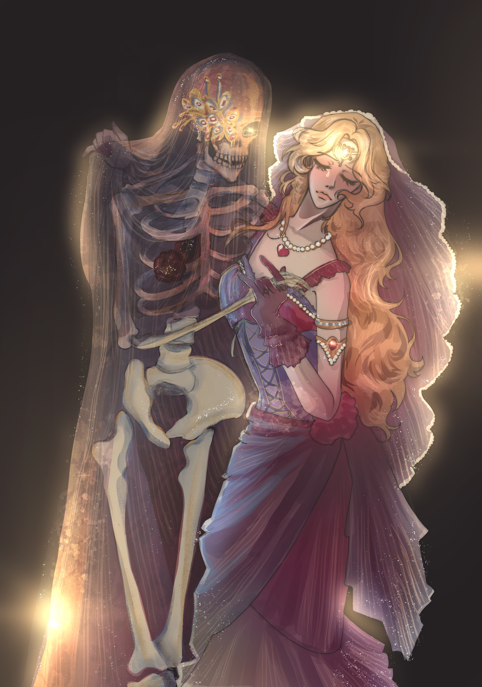
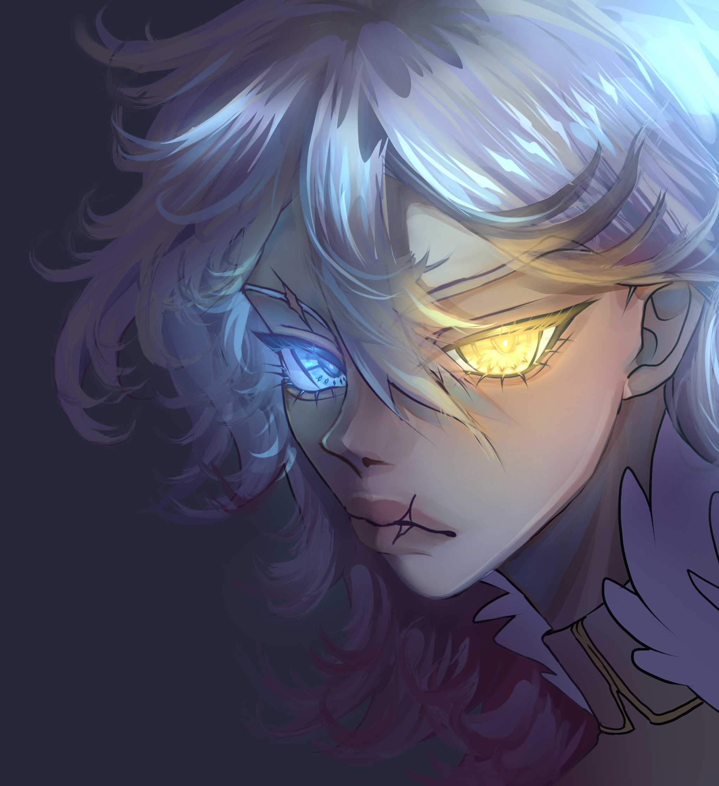
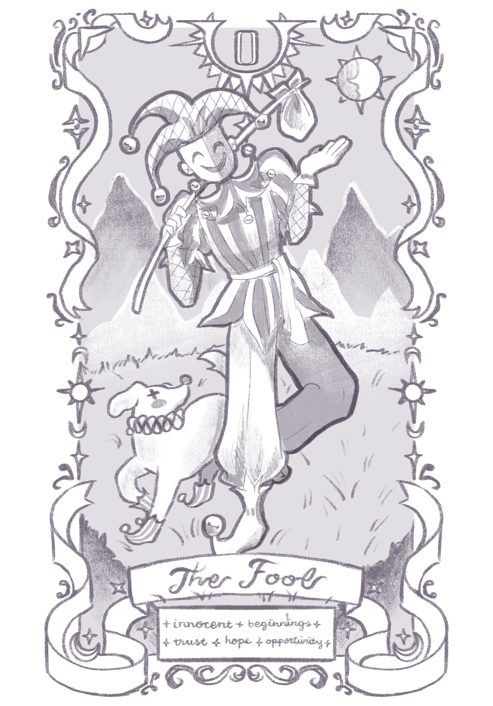
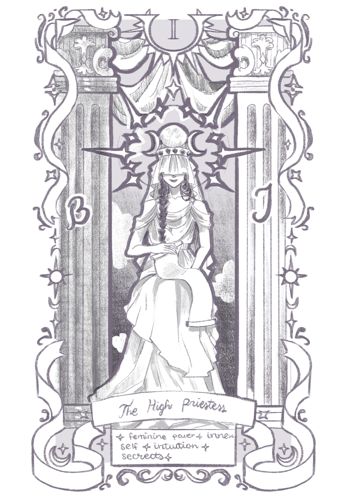
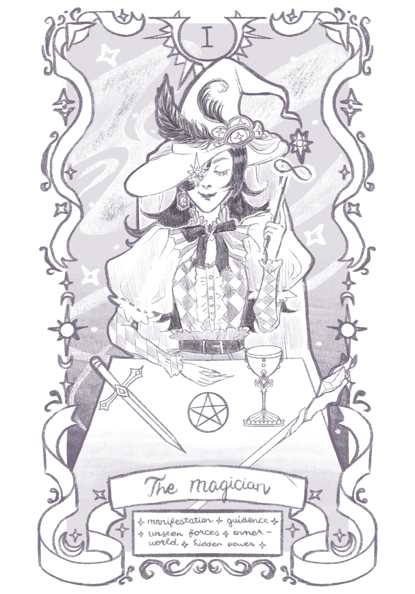
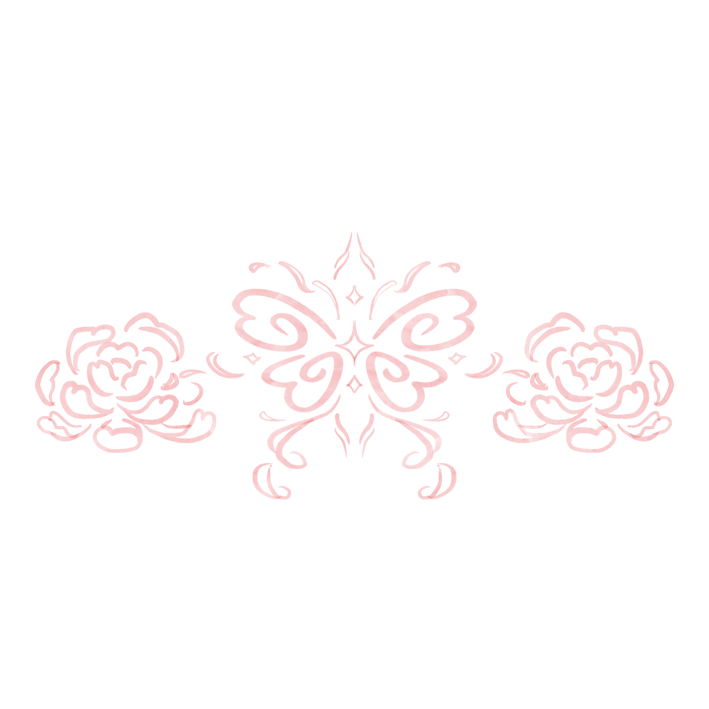

stella mars
hello welcome to my summer reading game!
character illustrations

summer picnic
Medium: Procreate (July, 2023)
Character illustration I had done for my original character, Odette. I was inspired by the warmth of summer and wanted to create a piece that encapsulates the
feeling of a summer picnic. I added cherries since they seem to be such a summer fruit! I also wanted to experiment with the lighting and shading in this piece which I thought turned out very nicely.

knight
Medium: Procreate (September, 2024)
As a HoYoverse official content creator, I created this piece for a character birthday event. It features one of the five main characters from their game, Tears of Themis, Vyn Richter. I wanted to create a piece that was both dynamic and detailed, and I think I achieved that.
I also explored different methods in creating a stained glass look for the background. I basically spent most of my time messing around with colors and layer modes for the desired effect. I am very proud of the lighting I ended up creating for this piece. It has such a mesmerizing glow!

dangerous waters
Medium: Procreate (January, 2025)
Listening to the soundtrack for "Pirates of the Caribbean: On Stranger Tides", I was inspired by the portrayal of the mermaids in the movie. The haunting melody resonated with me so deeply that I wanted to create a piece based off of the mermaids.
Dangerous yet beautiful, I wanted to emphasize the duality by using lighting and colors. Using murky colors for the deep sea, it compliments the glowing pale figure of the mermaid. Overall, this piece came out better than I intended so I am really proud of the outcome!

pure light
Medium: Procreate (July, 2023)
For this piece, I wanted to stick to a muted color palette with using yellows and desaturated blues. It was a challenge but I took inspiration from angel statues and lighting from cinematic films.
This ended up as an ethereal piece depicting an angel reaching for the light.

hands in hands: a dance with death
Medium: Procreate (August, 2023)
Following a similar challenge as 'pure light,' I used a limited color palette of just the primary colors.
Listening to 'The Phantom of the Opera' soundtrack, I wanted to encapsulate the gothic romance of the musical. It was
fun seeing the entire piece come together with the lighting and shadows. I also enjoyed creating the details of the dress and veil because it allowed me to reconnect with my fashion deesign roots.

blue ice, yellow sun
Medium: Procreate (September, 2023)
Playing around with layers and lighting, I wanted to put emphasis on the character's unique eye colors. From my own original character collection, Josie sports a pair of heterochromia eyes that are blue and yellow.
To make her eyes stand out more, I decided to create the piece with dimmer lighting to really bring out the glow.
tarot collection



Medium: Procreate (November, 2023)
I was once obsessed with tarot cards in 2023 and because of my interest, I was inspired to create designs of my own. I did research by reading books on the topic, consulted people who are seasoned in tarot, and did a bunch
of googling and referencing online. With this, I compiled the first three cards of the Major Arcana: The Fool, The Priestess, and The Magician.

{kind=link}
{kind=link}
{kind=link}
{kind=link}